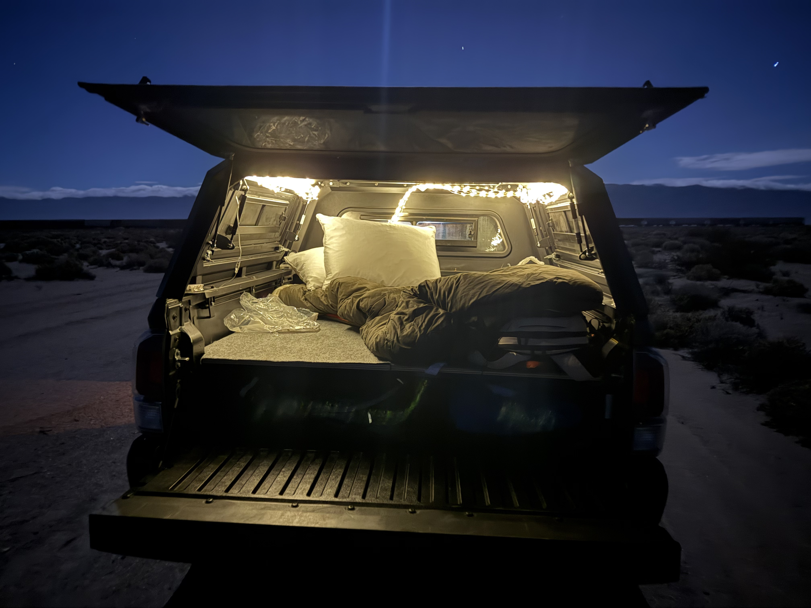
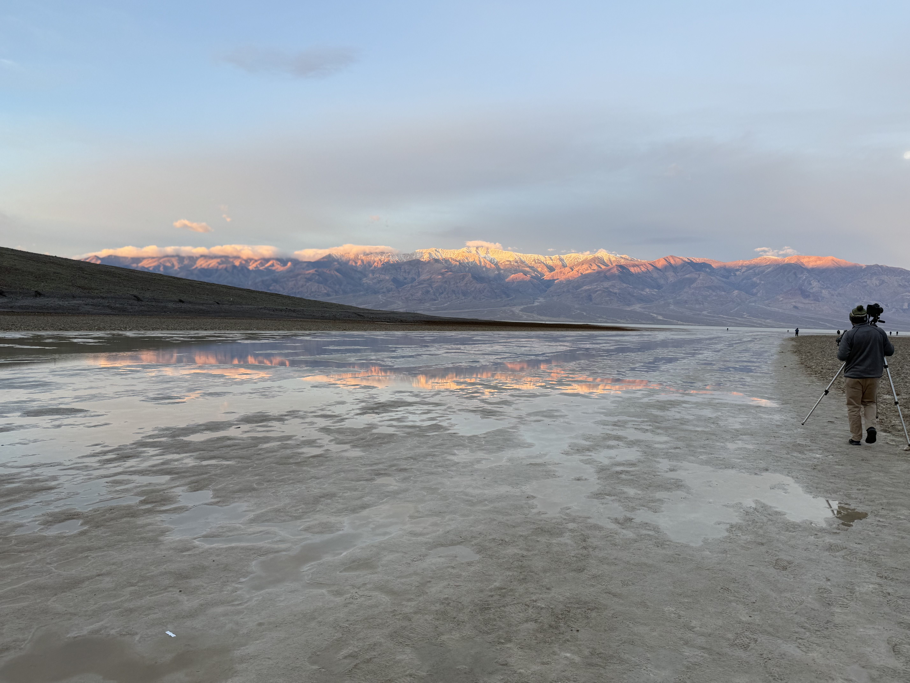

California National Parks in 2026
Exploring the state's national parks

Exploring the state's national parks
In 2026, I've made a goal of going to all of the national parks in California. I made this site to document my trips.


Very very dusty. Probably should clean


Lotta extra wood cuz I told the guy the wrong measurements

Just a couple of 2 by 4s and added some all weather carpet.

Two pieces of plywood 3 quarter inch thick and we're good to go! Cleaning off the dust was clearly not a priority of mine.
I have very little knowledge of what camping in the bed of a truck is going to be like. I figured getting a camper shell would be a good place to start. I dove into the depths of Facebook marketplace and found one! After I got the camper shell, I built out a bed system in the truck bed. I'm the least handy person on the planet but with the help of Youtube, I was able to build a pretty solid setup.

The first night in the camper shell! I drove up to Nipton, CA and camped out right next to White Cross World War I Memorial. The spot was perfect for my first time, plenty of free camping spots and some great trails nearby. For the first time sleeping in the camper, I was decently comfortable. A big miss on my part was not bringing a pillow. I also didn't bring a pump for my sleeping pad. The sleeping bag worked wonderfully though. So much room for improvement but I survived the first time! Only up from here.

I swear it was comfier than it looks but will need to get more organized for easier setup.


Second outing was definitely lazier in the setup. After getting cleaned out by Vegas, I drove up to Essex, CA and camped out near Hole in the Wall Campground. By the time I got there, I was cooked so I just laid in my sleeping bag and used my sweatshirts as a pillow. Although the sleeping setup was weaker than the first time, the morning out there was just as beautiful. Woke up and did the Hole in the Wall Rings loop before driving back home.



Happy New Year! Drove out 3 hours around sunset to Trona Pinnacles. I should have left a wee bit earlier as it was tough to navigate in the dark. I stopped about 5 miles short on a random dirt road off of Pinnacle Road. My truck felt the effect of the rain on the dirt roads these past couple weeks.


Oh boy. Buckle up for this one. Woke up at 6 am because I was worrying about the mud pit I had driven through the night before. I wanted to just get through it as early as possible in case anything went wrong. And in fact, everything went wrong. I tried to be sneaky and cut around the water that I barely made it through the night before and ended up getting stuck in a mud pit. I did everything you aren't supposed to do when you're in mud. I floored it in drive, floored it in reverse, turned my tires every which way. After I had dug myself deeper in the mud pit, I found some wood left by others who had also gotten stuck but were able to get out. I tried shimmying those under my tires and giving it another go. Did it work? Absolutely not.


So now it's 7 am. I'm covered head to toe in mud to match my mud covered car. With all my focus on getting out and not even considering the mud I was bringing in, I also managed to dump probably half the desert's supply of mud into the driver's seat. No cell service out there either. But I'm not panicking quite yet. This happens all the time to people. Just gotta wave someone down. And I do, three guys in a mid sized 2WD honda. I walk over to them knowing that their car will suffer the same fate as mine, if not worse. They think I'm a park ranger which they quickly find out I'm not as I approached them, appearing as if I had been birthed from the mud pit. They were good people and offered to take me to Trona which I swiftly took them up on, hopping in the car with my extra 10 pounds of mud before they could reassess their decision. On the way out, we stop by a jeep and a 70 year old man. He's kind enough to give a try in pulling my car out. No dice. He drove me into Ridgecrest, about 20 miles from where I was stuck. In Ridgecrest, he drops me off at a towing shop. I walk in and as the man sees my mud torn outfit, he recommends a different shop down the road, one made specifically for off road rescues. I'm optimistic. I show the guy the photos, say it's only a mile from the main road. My optimism is crushed and immediately replaced by dread when he replies "nope, it's too risky, probably won't work". So you're telling me the shop known for off road rescues can't rescue my car? I'm cooked. I sit in a McDonalds still dripping mud accepting the fact that I am now a mud person and will live the rest of my days in the mud beside my mud covered truck. I am the mud. I don't know where the mud ends and where I begin. I'm calling every towing company west of the Mississippi until finally, there's one that will do it. American Towing, literal angels. They pick me up from Mcdonalds, the employees celebrating the departure of the mud monster (probably). It takes an hour but the heroes get my truck out of the clutches of the mud. American Towing, thank you thank you thank you. I drive off and take my pavement princess (they coined my truck) to the car wash. So my original plan of having today be the big adventure in Death Valley went a bit different. I made it eventually to Stovepipe Wells and got a campsite (on a real road) and set up shop. My pre calculated agenda got wrecked and I had to freestyle for a bit. I guess that's the point though, makes for a better story!


Today was the big hiking day. First hike of the day was Mosaic Canyon. Very beautiful, like being on the moon with the black gravel. Second hike was Golden Canyon. This one was the bee's knees. Rock slabs were incredible. The last hike of the day was the Mesquite Flat Sand Dunes right before sunset.



Wrapped up the trip with a drive down Badwater Road to see Badwater Basin, Lake Manly, and Artist's Palette.